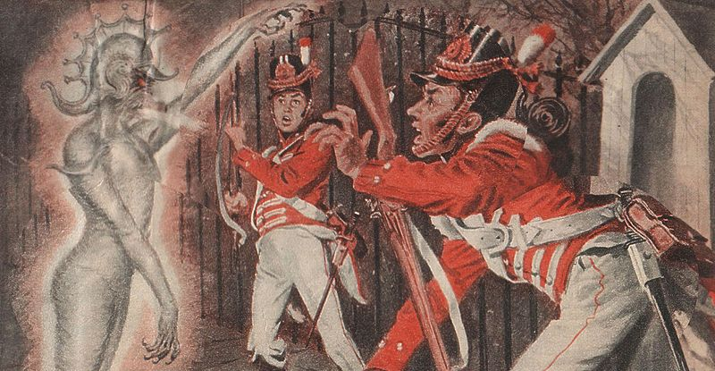
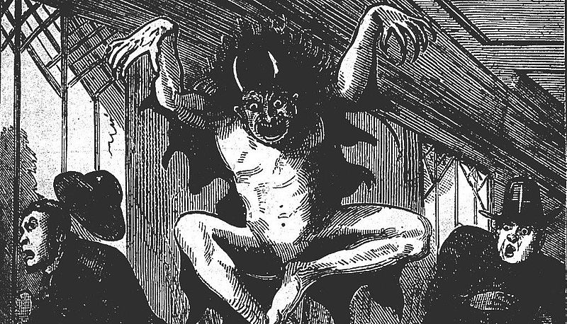

In the long past year of 1839, at the beginning of England’s Victorian Era, rumours started to circle of a mysterious figure that was wandering through the villages near London. Under the veil of darkness, it would attack women, tearing up their clothing with its claws… This description would suit yet another masked figure - except that Batman would focus on criminals instead of young women. The rumours about him spread quickly, thanks to the fact that his first close encounter with an 80-year-old Jane Aslop was published, along with his description. She insisted that it was a monster: “it spat blue and white flames” and it “tore my neck with its claws”.

Many people of that time believed that Spring-heeled Jack - as they have called this creature - was in fact a monster capable of moving at an incomprehensible speed and that it sometimes leapt 6 meters into the air. The official response was that all of these sightings were linked to a letter which was sent to the lord mayor of London, published earlier in early 1838: “It seems like some individuals have made a bet about an ominous and inconsiderate friend (still of an unknown name), who does not dare to accept the blame on himself for visiting a lot of villages near London, being disguised as three figures - a ghost, a bear and a devil.” Many have suspected the aristocrat Henry Beresford, Marquess of Waterford, a man which was renowned in the city during that time - however, nothing has been proven. (Wait a second! A famous, powerful young man who was suspected to be the ominous figure and who was under the cover of darkness? Did Bruce Wayne have a Victorian great grandfather?) And so, the legend rose of the aristocrat that wandered the villages, terrorizing young women, in a similar fashion as had Jack the Ripper 50 years later in London itself.
In the coming decades, rumours about Jack and his foul deeds spread further - even though reports of him became rarer, people across England talked about mysterious attacks on post chariots, women being assaulted, and up until 1877, they even talked about groups of soldiers being attacked by the figure. Rumours about it being a demon which was summoned by occult devil worshipers have spread, it was even said that it was not of this world - it was seen in a similar fashion as Batman was by the criminals he was chasing at the beginning of his crime-fighting career.
Things became even more strange… After 1870, rumours about Jack became rarer. Eventually, he started to emerge in works of fiction. His first appearance was as a melodramatic anti-hero, then, sometime later, he emerged as some kind of superhero. The thing is, Spring-heeled Jack was finished long before Batman’s creation. During the late 20th century, Jack began to reemerge - he even traversed the Atlantic ocean, having his first appearance in Northern Carolina in 1973 - described as “a skinny, long-haired man with pointy ears and glowing red eyes, who leapt up to 50 to 65 feet into the air.”

Texas locals saw that “the creature was 6 feet tall, had pointy ears, and jumped across the football field in just a couple of leaps - like an astronaut on the Moon.” in 1979. Even to this day, Jack still appears. Allegedly, in 2012 it terrorized a family in England, which claimed that it saw as “the mysterious figure without a face” ran across the road in front of them before it jumped over a 4 meter fence which stood across the road from them.

Many still believe that Jack is a demon, or an alien, but the true source of his many appearances is not really out of this World. Sceptics have long pointed out that the sightings as are Jack’s, usually just stories which by ways of plagiarism or creation of mass hysteria become urban legends. That is how, according to this version of the story, although indirectly, Batman came to be.